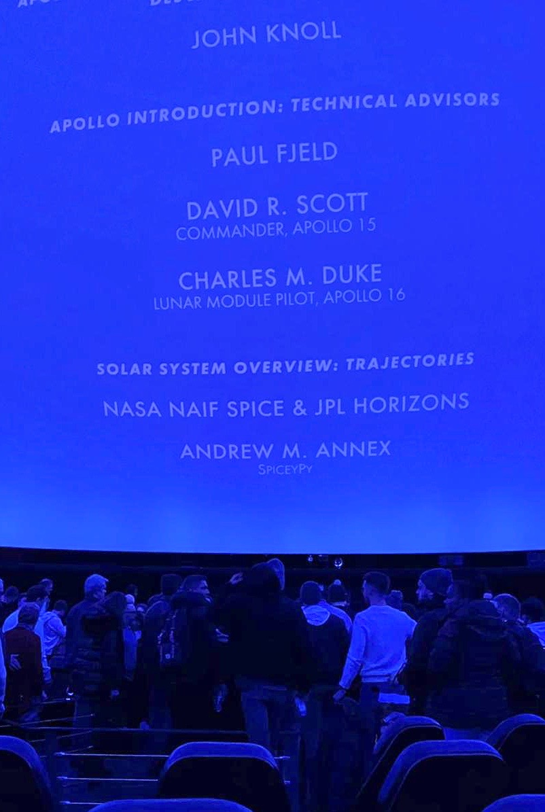
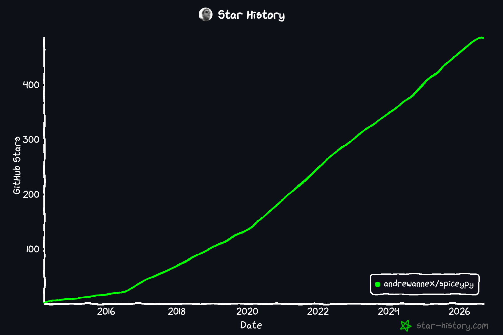
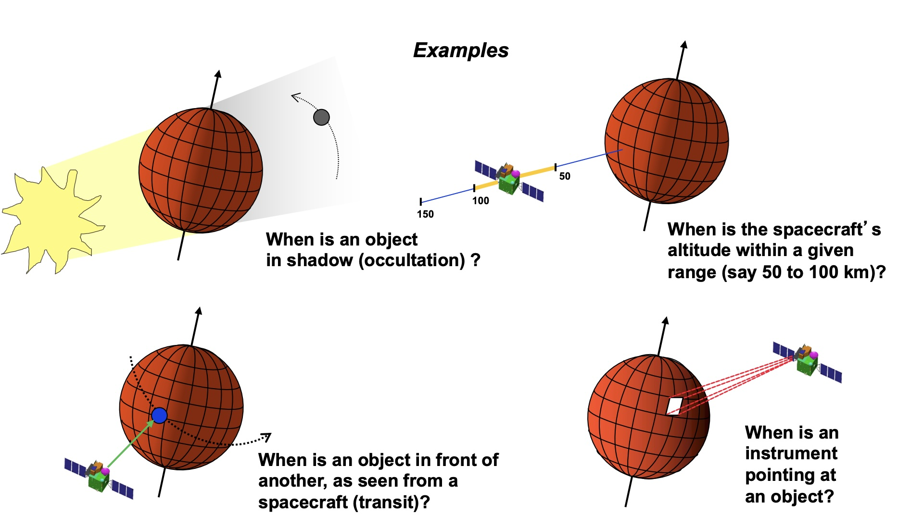

# Accessing NASA Planetary Ephemeris with SpiceyPy Andrew Annex, Ph.D. PyBeach 2026 --- <!-- .slide: id="hook" --> ## When is the next partial solar eclipse visible from Santa Monica? Guess the year... <!-- .element: class="fragment" --> We'll compute it live, in Python, in this browser, with the same NASA toolkit planetary missions use. <!-- .element: class="fragment" --> Along the way: retrace Perseverance's drive on Mars, and replay Cassini's flyby of Enceladus in 3D. <!-- .element: class="fragment" --> --- <!-- .slide: class="side-by-side about-slide" --> ## About Me * Planetary Scientist: Geology and Remote Sensing * Mars 2020 rover science operations team * VIPER lunar rover science operations team * Geospatial & CV software focus * (current) Senior Software Engineer @ Planet <figure class="captioned"> <p></p> <figcaption>SpiceyPy in Worlds Beyond Earth Planetarium Show at the Hayden Planetarium, 2020</figcaption> </figure> www.andrewannex.com <!-- .element: class="full-width" --> --- # AI Usage Disclosure * Project pre-dates Gen-AI * This slide deck does not * No, I didn't just one-shot this presentation. * AI used to get deployment correct and to write demos --- <!-- .slide: class="side-by-side star-slide" --> ## What is SpiceyPy (briefly) * Open source Python library I started in 2014 * MIT licensed * macOS windows linux emscripten (new) * Wraps NASA JPL's SPICE toolkit (more on this soon) * Supported by NASA PDART grant 80NSSC25K7040 <a href="https://www.star-history.com/?repos=andrewannex%2Fspiceypy&type=date&releases=&legend=bottom-right"> <p></p> </a> okay, but what is JPL's SPICE toolkit then? <!-- .element: class="full-width" --> --- ## What is SPICE (briefly) * Fortran Software Library for NASA scientists and engineers to work with Spacecraft and Planetary Ephemeris information * Ephemeris information is the positions and orientations of planets and spacecraft as a function of time. * Also: where each instrument is mounted and points, plus camera details (focal lengths, fields of view) * Roots in the Voyager mission, formalized in the early 1980's; JPL provides Fortran, C, Java, IDL and MATLAB interfaces, 600+ functions https://naif.jpl.nasa.gov/naif/spiceconcept.html<br> https://naif.jpl.nasa.gov/naif/spicehistory.html --- <!-- .slide: class="side-by-side even" --> ## What can you do with SPICE (briefly) * coordinate, time, and frame conversions * lookup/replay NASA mission and planetary ephemeris - where was the spacecraft at this date? - where was Phobos (a moon) at this date? * compute viewing geometry info and occultations - when will this asteroid pass in front of this star from this surface point? - what is the illumination geometry at this date at this surface point? <figure class="captioned"> <p></p> <figcaption>Credit: NASA JPL NAIF</figcaption> </figure> https://naif.jpl.nasa.gov/pub/naif/toolkit_docs/C/info/mostused.html <!-- .element: class="full-width" --> --- ## How does SPICE work? * Ephemeris data stored in bespoke binary and ascii text files called "kernels" - SPK: positions · CK: orientation · LSK: leap seconds - PCK: planet shapes & rotation · FK / IK: frames & instruments * Loads state into kernel pool - functionally an in-memory time & kv database #### more on this later... --- ## What else compares to SPICE? * JPL Horizons (astroquery): web service, quick lookups, little customization * Skyfield / astropy: Earth-based observing (planets, stars, satellites) - not NASA mission data, nor every body, frame or ephemeris type * NAIF WebGeoCalc: server-based SPICE, different API * JPL MONTE: JPL's navigation software, not open source SPICE: any observer, any target, any frame, if there's a kernel for it not a mission-design tool like STK or NASA's GMAT; SPICE is lower level --- <!-- .slide: class="pipeline-slide" --> ## From Fortran to `pip install` <div class="pipeline"> <div class="stage"><b>Fortran 77</b><span>NAIF's SPICE, 1980s</span></div> <div class="arrow">→</div> <div class="stage"><b>f2c</b><span>machine-translated to C</span></div> <div class="arrow">→</div> <div class="stage"><b>CSPICE</b><span>~2,200 C files</span></div> <div class="arrow">→</div> <div class="stage"><b>shared library</b><span>built with CMake</span></div> <div class="arrow">→</div> <div class="stage you"><b>SpiceyPy</b><span>ctypes wrappers, since 2014</span></div> </div> | | macOS x86-64 | macOS arm64 | Linux x86-64 | Linux aarch64 | Windows x86-64 | Browser (wasm32) | |---|:-:|:-:|:-:|:-:|:-:|:-:| | CPython | 3.10–3.15 | 3.10–3.15 | 3.10–3.15 | 3.10–3.15 | 3.10–3.15 | 3.14 | * 600+ CSPICE functions wrapped, plus a Cython submodule (2025) on the same library * scikit-build-core runs CMake straight from `pyproject.toml` * cibuildwheel builds 31 wheels per release on GitHub Actions, CSPICE compiled once per platform; also on conda-forge * docs on readthedocs, > 99% code coverage on codecov --- <!-- .slide: class="steal-slide" --> ## Steal this for your C-wrapper library 1. **Tests first**: at least one pytest per wrapped function, run against every wheel, even inside Pyodide. They proved each platform actually worked before shipping 2. **CMake + scikit-build-core** builds the C library, all driven from `pyproject.toml` 3. **cibuildwheel** for the platform matrix; `--platform pyodide` adds the browser wheel 4. **Build the C dependency once per platform**, not once per Python version --- <!-- .slide: class="browser-slide" --> ## Python, in your browser or phone <div class="cols"> <div> <h3>What's running</h3> <ul> <li><b>Emscripten</b>: compiles C/C++ to WebAssembly (Wasm), code your browser can run</li> <li><b>Pyodide</b>: CPython itself compiled to Wasm, with numpy, matplotlib and more</li> <li><b>PyScript</b>: Pyodide in a web page; every editor in this deck is a PyScript cell</li> <li><b>SpiceyPy</b>: NAIF's CSPICE compiled to Wasm, the same C code as the desktop wheels</li> </ul> </div> <div> <h3>Why it's cool</h3> <ul> <li>real CSPICE running client side: no server, nothing to install</li> <li>interactive docs and teaching material: edit the example, run it</li> <li>easier for people new to Python (or SPICE) to try</li> <li>richer visuals: results flow straight into matplotlib, maps and three.js</li> <li>runs anywhere a browser does, even your phone</li> </ul> </div> </div> **PEP 783** gives Wasm wheels a platform tag of their own (`pyemscripten`), so they are distributed via PyPI. This deck installs SpiceyPy 8.3.0's `pyemscripten_2026_0` wheel, built for this year's Pyodide. --- ## SpiceyPy, live in your browser * slide deck uses pyodide via pyscript * this is actual python code and emscripten compiled CSPICE running client side ```python import spiceypy as spice print(spice.tkvrsn("TOOLKIT")) ``` #### tkvrsn: which CSPICE version is running? --- <!-- .slide: id="m20" --> ## Demo: Mars Perseverance Rover Three Forks Sample Depot Let's use SPICE data to plot the Perseverance Rover's position on Mars to find the sample tube locations. --- ## Setup * this may take a few seconds, kernels download in the background... ```python import numpy as np import matplotlib matplotlib.use("AGG") import matplotlib.pyplot as plt from pyscript import display import spiceypy as spice print('ready!') ``` <!-- .element: data-env="m20" data-config="./pyscript_m20.json" --> --- ## Load the kernels ```python import os # metakernel PATH_VALUES are relative to the working directory if os.path.isdir('m20_three_forks_demo'): os.chdir('m20_three_forks_demo') # load the metakernel spice.furnsh('m2020_v16_221216_230201.tm') print(f"We loaded {spice.ktotal('ALL')} Kernel files") ``` <!-- .element: data-env="m20" --> #### furnsh loads kernels; a metakernel is a list of kernels to load --- ## Define start and end dates and sample points ```python sol_648 = spice.str2et('2022-12-16') sol_693 = spice.str2et('2023-01-31') times = np.linspace(sol_648, sol_693, num=45*24*20, endpoint=True) print(f"Sampling {len(times)} times over 45 sols") ``` <!-- .element: data-env="m20" --> #### str2et: date string → seconds past J2000 (TDB), leap seconds included --- ## Grab the positions `spkpos` is vectorized over times — one call, 21,600 positions: ```python positions, lttimes = spice.spkpos("M2020", times, "IAU_MARS", "lt+s", "MARS") print(f"Successfully grabbed {len(positions)} positions in IAU_MARS frame.") # convert from rectangular to latitudinal coordinates (in radians). r, lon, lat = np.array([spice.reclat(p) for p in positions]).T # convert to degrees lon, lat = np.degrees(lon), np.degrees(lat) ``` <!-- .element: data-env="m20" --> #### spkpos: where is the target, seen from the observer? reclat: x, y, z → lon, lat --- <!-- .slide: class="side-by-side" --> ## Plot the Rover's Traverse ```python fig = plt.figure(figsize=(6, 6)) ax = fig.add_subplot(111) ax.plot(lon, lat) ax.scatter(lon, lat, c=times) ax.ticklabel_format(useOffset=False, style="plain") ax.tick_params(axis="x", labelrotation=45) ax.set_xlabel("longitude (°E)"); ax.set_ylabel("latitude (°N)") ax.set_title("M20 Rover Traverse Sols 648-693") fig.tight_layout() display(fig, target="mplm20", append=False) ``` <!-- .element: data-env="m20" --> <div id="mplm20"></div> --- <!-- .slide: class="side-by-side map-slide" --> ## Plot the Rover's Traverse, But Better! ```python import folium tiles=('https://mars.nasa.gov/mmgis-maps/M20/Layers/' 'M20_HiRISE_RGB_CTX_mosaic_25cm_v7_Merge_LERC_clip/' '{z}/{x}/{y}.png') m = folium.Map( location=[np.median(lat), np.median(lon)], zoom_start=17, max_zoom=21, tiles=None ) # HiRISE mosaic: web-mercator TMS tiles (rows count from the bottom) folium.TileLayer(tiles, attr='NASA/JPL/Caltech/UofA', name='HiRISE', tms=True, max_native_zoom=19, max_zoom=21).add_to(m) utc_times = spice.et2utc(times, 'C', 0) folium.PolyLine(list(zip(lat, lon)), color='green').add_to(m) for la, lo, t in list(zip(lat, lon, utc_times))[::50]: folium.Marker((la, lo), tooltip=t).add_to(m) folium.LayerControl().add_to(m) spice.kclear() # tidy the kernel pool display(m, target="folium_m20", append=False) ``` <!-- .element: data-env="m20" --> <div id="folium_m20"></div> #### et2utc converts ephemeris time to UTC strings <!-- .element: class="full-width" --> --- <!-- .slide: id="replay-demo" --> ## Demo: Cassini at Saturn - load real mission kernels for Cassini's E8 flyby of Enceladus (2009-11-21) - compute where Cassini was, which way it pointed, and what its camera saw - replay it in 3D in the browser with three.js --- ## Load the flyby kernels Two hours of the real E8 flyby. ```python import json, os import numpy as np import spiceypy as spice import spice_replay os.chdir("cassini_flyby") spice.furnsh("cas_2009_v21_091121_091121.tm") events = json.loads(open("events.json").read()) print(f'{spice.ktotal("ALL")} kernels, {len(events["frames"])} ISS NAC frames') ``` <!-- .element: data-env="replay" data-config="./pyscript_replay.json" --> #### every number in the 3D view is computed from these kernels --- ## Where was Cassini? ```python et0 = spice.str2et("2009-11-21T01:00:00") et1 = spice.str2et("2009-11-21T03:00:00") times = np.arange(et0, et1, 60.0) states, lts = spice.spkezr("CASSINI", times, "J2000", "NONE", "ENCELADUS") print("position km ", states[0][:3]) print("velocity km/s", states[0][3:]) ``` <!-- .element: data-env="replay" --> #### spkezr: position + velocity, for smooth motion between samples --- ## Which way was it facing? ```python m = spice.pxform("CASSINI_SC_COORD", "J2000", times[0]) print("quaternion", spice.m2q(m)) shape, frame, bsight, n, bounds = spice.getfov(spice.bods2c("CASSINI_ISS_NAC"), 4) print(f"{shape} FOV in {frame}, boresight {bsight}") ``` <!-- .element: data-env="replay" --> #### pxform + m2q: which way Cassini points; getfov: what its camera sees --- ## Hand it to the browser ```python from pyscript import window payload = spice_replay.build( events=events, start="2009-11-21T01:00:00", stop="2009-11-21T03:00:00", center="ENCELADUS", bodies=["ENCELADUS", "SATURN"], spacecraft="CASSINI", spacecraft_frame="CASSINI_SC_COORD", instruments=["CASSINI_ISS_NAC"], ) print(window.showReplay(json.dumps(payload))) ``` <!-- .element: data-env="replay" --> #### build: the same calls over the whole flyby, packed as JSON --- <!-- .slide: class="replay-slide" --> ## 2009-11-21: Enceladus, E8 Cassini flyby <span class="cred-star">*</span> <div id="replay"></div> <p class="cred-note">* kernels, imagery and models credited on the last slide</p> --- <!-- .slide: id="eclipse" --> ## Demo: The next solar eclipse over Santa Monica SPICE's geometry finder searches time for *when* something happens. Load the Sun, Earth and Moon ephemeris from now through 2033: ```python import os from zoneinfo import ZoneInfo import spiceypy as spice pacific = ZoneInfo('America/Los_Angeles') spice.furnsh([ 'santa_monica_eclipse/lsk/naif0012.tls', 'santa_monica_eclipse/pck/pck00010_sun_earth_moon.tpc', 'santa_monica_eclipse/spk/de438s_2026_2033.bsp', ]) print(f'Loaded {spice.ktotal("ALL")} kernels') ``` <!-- .element: data-env="eclipse" data-config="./pyscript_eclipse.json" --> --- ## Make Santa Monica Frame Kernel Name the site, and give it a topocentric frame (+Z up, +X north), fixed to the Earth: ```python lon, lat = -118.4912, 34.0195 # Santa Monica, degrees spice.boddef('SANTA_MONICA', 399901) spice.lmpool([ "FRAME_SANTA_MONICA_TOPO = 1399901", "FRAME_1399901_NAME = 'SANTA_MONICA_TOPO'", "FRAME_1399901_CLASS = 4", "FRAME_1399901_CLASS_ID = 1399901", "FRAME_1399901_CENTER = 399901", "TKFRAME_1399901_RELATIVE = 'IAU_EARTH'", "TKFRAME_1399901_SPEC = 'ANGLES'", "TKFRAME_1399901_UNITS = 'DEGREES'", "TKFRAME_1399901_AXES = (3, 2, 3)", f"TKFRAME_1399901_ANGLES = ({-lon}, {lat - 90}, 180)", ]) ``` <!-- .element: data-env="eclipse" --> #### boddef: name a new body; lmpool: define its frame from strings --- ## ...and an SPK for where it is Write the site's position on the Earth's ellipsoid into a new SPK file: ```python re, _, rp = spice.bodvrd('EARTH', 'RADII', 3)[1] site = spice.georec(lon * spice.rpd(), lat * spice.rpd(), 0, re, 1 - rp / re) state = [*site, 0, 0, 0] # fixed to the ground: no velocity in IAU_EARTH et0, et1 = spice.str2et('2026 OCT 01'), spice.str2et('2034 JAN 02') if os.path.exists('santa_monica.bsp'): os.remove('santa_monica.bsp') handle = spice.spkopn('santa_monica.bsp', 'Santa Monica', 0) spice.spkw08(handle, 399901, 399, 'IAU_EARTH', et0, et1, 'Santa Monica', 1, 2, [state, state], et0, et1 - et0) spice.spkcls(handle) spice.furnsh('santa_monica.bsp') ``` <!-- .element: data-env="eclipse" --> #### georec: lon, lat → x, y, z; spkw08: write our own SPK file --- ## When is the Moon near the Sun? Search from right now through 2033 for times the Moon is within 2° of the Sun: ```python from datetime import datetime, timezone now = spice.datetime2et(datetime.now(timezone.utc)) search = spice.cell_double(2) spice.wninsd(now, spice.str2et('2034 JAN 01'), search) close = spice.cell_double(1000) spice.gfsep('MOON', 'SPHERE', 'IAU_MOON', 'SUN', 'SPHERE', 'IAU_SUN', 'LT', 'SANTA_MONICA', '<', 2 * spice.rpd(), 0.0, spice.spd(), 500, search, close) print(f'The Moon passes within 2° of the Sun {spice.wncard(close)} times') ``` <!-- .element: data-env="eclipse" --> #### gfsep: when is the angle between two bodies < 2°? --- ## When does the Moon block the Sun? ```python eclipses = spice.cell_double(1000) # search only inside the gfsep windows (close), so this stays fast spice.gfoclt('ANY', 'MOON', 'ELLIPSOID', 'IAU_MOON', 'SUN', 'ELLIPSOID', 'IAU_SUN', 'LT', 'SANTA_MONICA', 180.0, close, eclipses) # a window of [start, end] intervals; geometry only, so some are at night for i in range(spice.wncard(eclipses)): times = spice.et2datetime(spice.wnfetd(eclipses, i)) start, end = [t.astimezone(pacific) for t in times] print(f'{start:%a %b %d %Y, %I:%M %p} to {end:%I:%M %p %Z}') ``` <!-- .element: data-env="eclipse" --> #### gfoclt: when does one body block another? --- ## ...while the Sun is up? Elevation is latitude in the site's topocentric frame (+Z up, +X north): ```python visible = spice.cell_double(1000) # when the latitude > 0 with respect to santa monica the sun is above the horizon # cnfine = eclipses: search only inside them, so visible = eclipse AND Sun up spice.gfposc('SUN', 'SANTA_MONICA_TOPO', 'LT+S', 'SANTA_MONICA', 'LATITUDINAL', 'LATITUDE', '>', 0.0, 0.0, 3600.0, 500, eclipses, visible) for i in range(spice.wncard(visible)): times = spice.et2datetime(spice.wnfetd(visible, i)) start, end = [t.astimezone(pacific) for t in times] print(f'{start:%a %b %d %Y, %I:%M %p} to {end:%I:%M %p %Z}') ``` <!-- .element: data-env="eclipse" --> #### gfposc: when does a coordinate meet a condition? (Sun elevation > 0°) --- <!-- .slide: class="side-by-side refs-slide" --> ## When is each eclipse deepest? The peak is when the Sun and Moon are closest together: <!-- .element: class="full-width" --> ```python for i in range(spice.wncard(visible)): eclipse = spice.cell_double(2) spice.wninsd(*spice.wnfetd(visible, i), eclipse) peak = spice.cell_double(2) spice.gfsep('MOON', 'SPHERE', 'IAU_MOON', 'SUN', 'SPHERE', 'IAU_SUN', 'LT+S', 'SANTA_MONICA', 'ABSMIN', 0.0, 0.0, 60.0, 1, eclipse, peak) when = spice.et2datetime(spice.wnfetd(peak, 0)[0]).astimezone(pacific) print(f'peak at {when:%a %b %d %Y, %I:%M %p %Z}') spice.kclear() # tidy the kernel pool ``` <!-- .element: data-env="eclipse" --> <div class="refs">compare to (time.now max for LA, Sun covered) <ul> <li>Jan 14, 2029: 8:20 AM, 51.6% (<a href="https://time.now/los-angeles/eclipses/2029-01-14/">time.now</a>, <a href="https://en.wikipedia.org/wiki/Solar_eclipse_of_January_14,_2029">Wikipedia</a>)</li> <li>Nov 14, 2031: 1:40 PM, 2.6% (<a href="https://time.now/los-angeles/eclipses/2031-11-14/">time.now</a>, <a href="https://en.wikipedia.org/wiki/Solar_eclipse_of_November_14,_2031">Wikipedia</a>)</li> <li>Mar 30, 2033: 10:20 AM, 26.3% (<a href="https://time.now/los-angeles/eclipses/2033-03-30/">time.now</a>, <a href="https://en.wikipedia.org/wiki/Solar_eclipse_of_March_30,_2033">Wikipedia</a>)</li> </ul> </div> --- <!-- .slide: class="thanks-slide" --> # Thanks For Listening! Questions? <div class="qr-row"> <a class="qr" href="https://andrewannex.com/pybeach_2026_spiceypy_talk/">Live slides</a> <a class="qr" href="https://github.com/AndrewAnnex/pybeach_2026_spiceypy_talk/">Slide source</a> <a class="qr" href="https://spiceypy.readthedocs.io/">SpiceyPy docs</a> </div> `pip install spiceypy` · `conda install spiceypy` www.andrewannex.com --- <!-- .slide: class="credits-slide" --> ## Credits <div class="refs">Kernels, imagery and 3D models used in these demos, in full in <a href="https://github.com/AndrewAnnex/pybeach_2026_spiceypy_talk/blob/main/CREDITS.md">CREDITS.md</a> <ul> <li><b>SPICE kernels</b> — NAIF/JPL PDS archives (public domain), sliced to each demo's time window</li> <li><b>Cassini ISS NAC frames</b> — loaded live from OPUS, PDS Ring-Moon Systems Node. NASA / JPL-Caltech </li> <li><b>Enceladus mosaic</b> — USGS Astrogeology, Cassini ISS, Schenk (2024). NASA / JPL-Caltech / USGS</li> <li><b>Mars basemap</b> — HiRISE/CTX mosaic via NASA Trek MMGIS. NASA / JPL-Caltech / UArizona / USGS</li> <li><b>Cassini-Huygens and Saturn models</b> — NASA 3D Resources and NASA Science. NASA</li> <li><b>Software</b> — SpiceyPy, CSPICE (NAIF), PyScript, Pyodide, reveal.js, three.js</li> </ul> <p class="disclaimer">NAIF, NASA, ESA and the USGS do not endorse this talk.</p> </div>